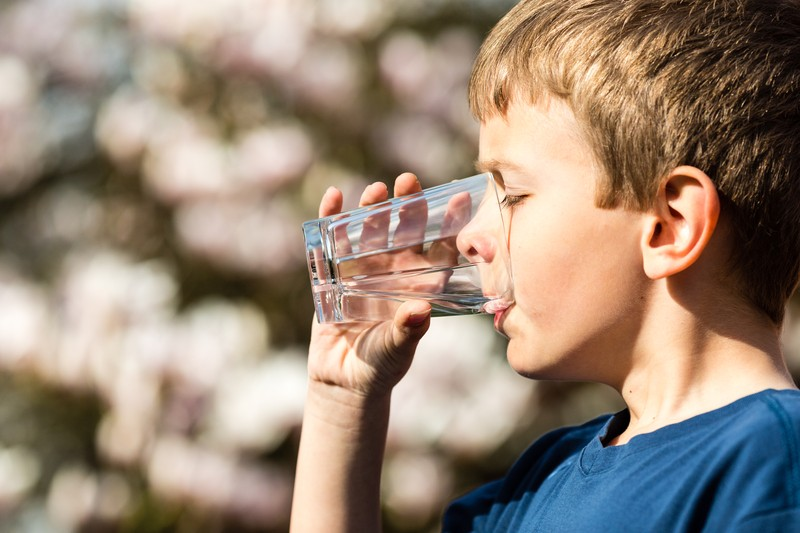

March 18, 2016
Drink Locally

You know all the reasons to eat locally, right? Fresher food, fewer additives, reduced transportation costs, resiliency through local food supply … Well, the same can be said for what you drink.
Tap water, whether you are on a municipal supply or your own well, is the local and more sustainable alternative for drinking. Bottled water may have its place for true emergencies (think Katrina, or the Elk River chemical spill in Charleston WV), but for every day drinking local tap water is the most planetarily compatible option.
The reasons are primarily because of the enormous amount of fossil fuels required to transport water across the landscape in trucks. Burning fossil fuels is the primary driver behind climate change, and transportation is one of the biggest contributors. There’s also the matter of the plastic bottles themselves, which are made from natural gas and byproducts of petroleum manufacture, and generally end up in landfills.
But don’t take it from us. Read more in Prof Christiana Peppard’s (who bans bottled water from her classroom!) blog “7 Reasons To Never Drink Bottled Water Again.”
Photo credit: Dreamstime